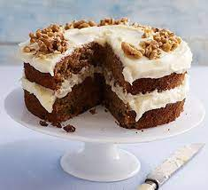

Carrot Cake

Description
Carrot cake is a sweet and moist spice cake, full of cut carrots and toasted nuts, and covered in cream cheese icing.
One part of the cake is that the orange flakes of cut carrot give the cake color and texture, along with sweetness and
moisture.
Carrot cake may be eaten plain, but it is commonly either glazed or covered with white icing or cream cheese icing and
walnuts, often cut. Often they are decorated with frosting or marzipan made to look like carrots. They are popular in
loaf, sheet cake and cupcake form, and (in the United Kingdom as well as North America) can be found pre-packaged at
grocery stores, and fresh at bakeries. Some carrot cakes are even layered.
Ingredients
Cake
- 2 cups white sugar
- 1¼ cups vegetable oil
- 4 eggs
- 2 teaspoons vanilla extract
- 2 cups all-purpose flour
- 2 teaspoons baking soda
- 2 teaspoons baking powder
- 2 teaspoons ground cinnamon
- ½ teaspoon salt
- 3 cups grated carrots
- 1 cup chopped pecans
Frosting
- ½ cup butter, softened
- 8 ounces cream cheese, softened
- 4 cups confectioners' sugar
- 1 teaspoon vanilla extract
- 1 cup chopped pecans
Steps
- Preheat the oven to 350 degrees F (175 degrees C). Grease and flour a 9x13 inch pan.
- Beat sugar, oil, eggs, and 2 teaspoons vanilla together in a large bowl with an electric mixer until well combined. Mix
in flour, baking soda, baking powder, cinnamon, and salt. Stir in carrots. Fold in pecans. Pour into the prepared pan.
- Bake in the preheated oven until a toothpick inserted into the center of the cake comes out clean, about 40 minutes. Let
cool in the pan for 10 minutes, then turn out onto a wire rack and cool completely.
- To make the frosting: Beat butter, cream cheese, confectioners' sugar, and 1 teaspoon vanilla together in a large bowl
with an electric mixer until smooth and creamy. Stir in chopped pecans. Frost the cooled cake.